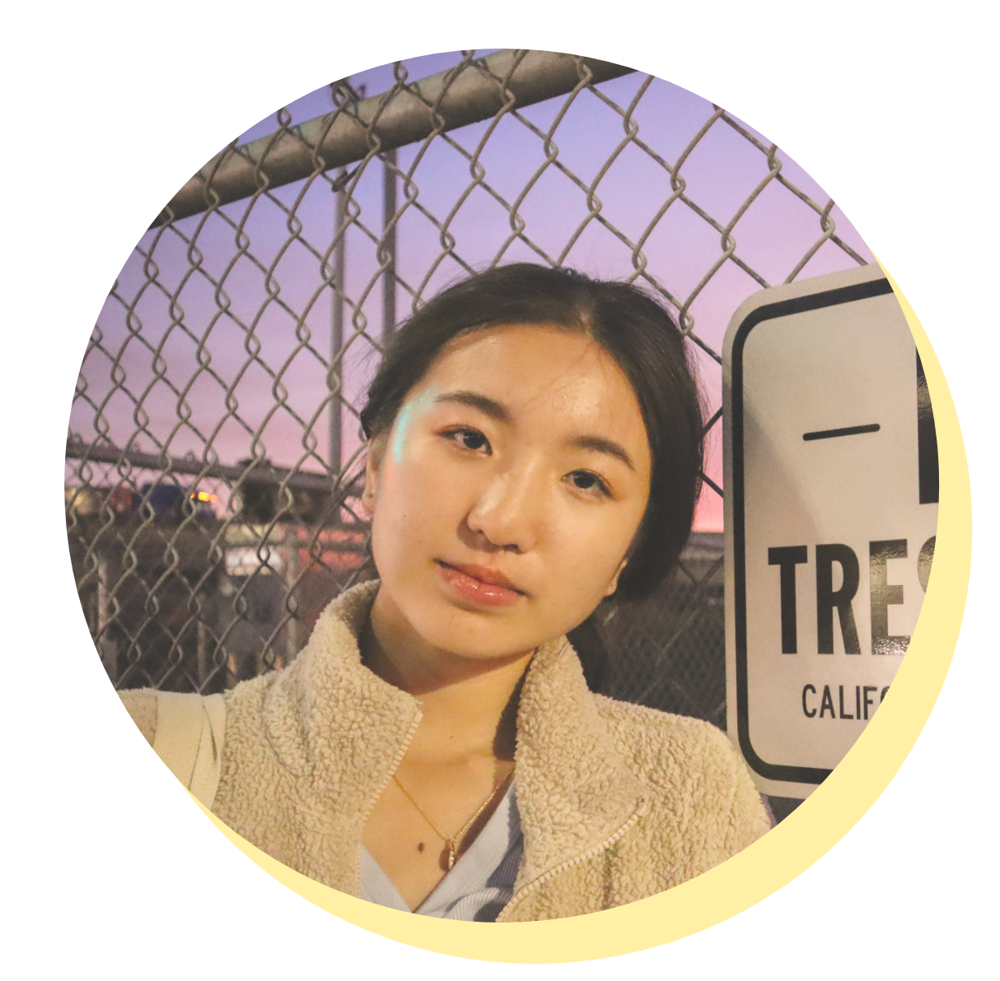
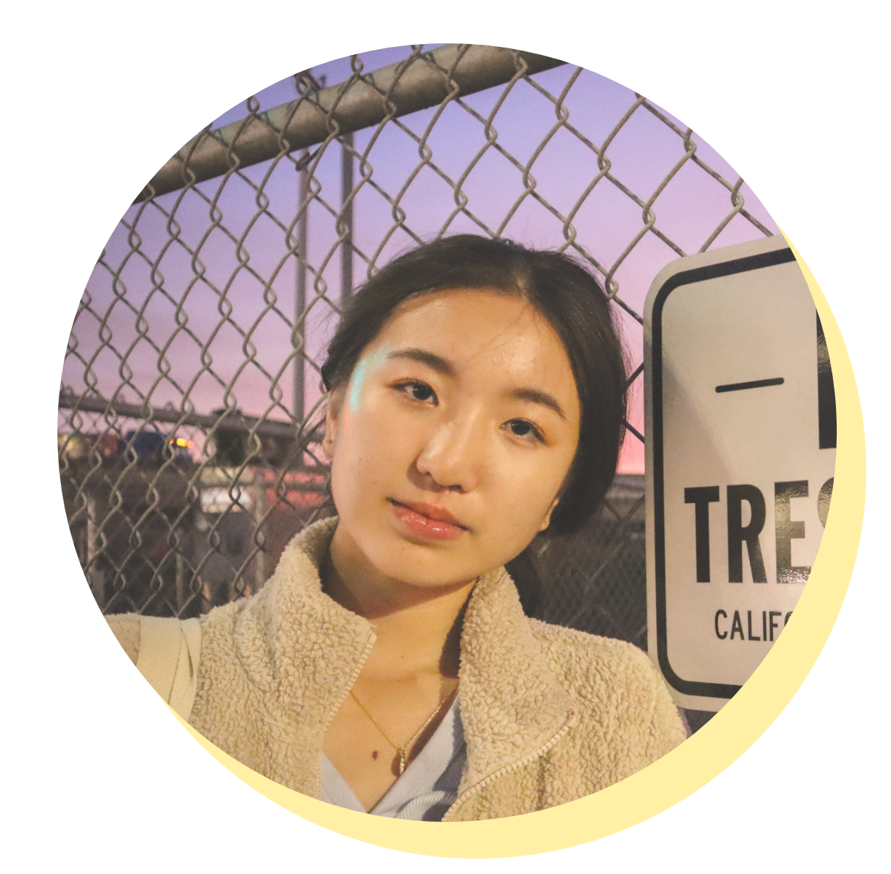

Hello! I’m Cathy, an 18 year old designer/photographer at UC Berkeley, majoring in Cognitive Science and Business and minoring in German. I am fascinated by the ways colors, lines, shapes, and shadows define our world, and aim to capture such visions through my creative works.
Don’t be afraid to reach out! Reach out with an email and let’s talk all about how I can help turn your vision into reality!
Email: cathyzhang@berkeley.edu